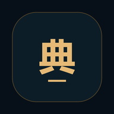
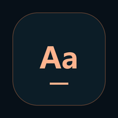

把学习图标放到桌面
每个入口都能单独打开。请逐个添加，不是一次自动安装全部图标。
安卓手机
- 在 Chrome 或手机系统浏览器打开本页，不要停留在微信内置浏览器。
- 选择下面一个学习应用，进入后点“添加此应用到桌面”。
- 如果未出现系统安装提示，点浏览器菜单 ⋮ → 安装应用 / 添加到主屏幕 / 添加到桌面。
- 返回本页，重复添加其他学习图标。
学习空间总入口打开并添加 ↗汉字笔顺识字与笔顺打开并添加 ↗

课本国学古诗文与经典打开并添加 ↗小学数学数学学习打开并添加 ↗森林英语字母与故事打开并添加 ↗
课本英语一年级上册打开并添加 ↗已有的旧图标怎么更新？
先打开原来的学习图标，点“桌面图标”→“检查更新并重新打开”，联网加载最新内容。收藏与学习记录会保留。
如果桌面仍显示旧图案，系统可能没有更新快捷方式图标。可先从浏览器添加新图标，确认能用后再移除旧的快捷方式。不要清除浏览器数据、网站存储或学习记录。如果系统“卸载”界面提示同时删除数据，请取消。
iPhone / iPad
在 Safari 中分别打开每个学习应用，点“分享”→“添加到主屏幕”。
浏览器菜单与系统安装能力因手机而异。网页不能替你直接操作手机桌面，也不能批量静默安装。相同手机最好始终使用同一个浏览器，学习记录通常保存在该浏览器中。
图标版本：2026-11-05 · 学习内容使用各应用当前线上版本